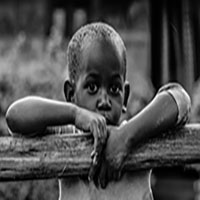
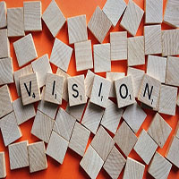
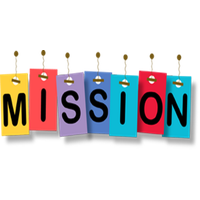
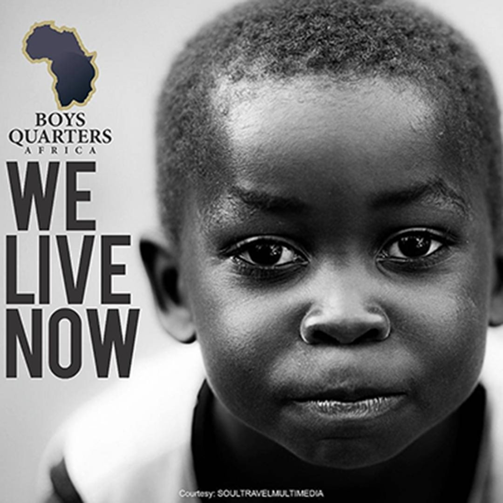

About US
-

Boys Need Attention Too
From the boy with an absent Father in Kampala, to the boy who has just been sexually molested in Abuja, the life trajectory of the African boy is filled with valleys, mountains and divergent experiences they may not be able to share until they become Fathers. Hence, this destructive weight is passed on from generation to generations and from Fathers to their Sons.
Africa as a continent is encumbered by divergent warring darkness and the need to salvage the boy race must be an important focus, if we must deliver the future we desire for Africa & humanity. It would fatal to assume the movement toward the redemption of the boy-child race is another cross fire in the feminism & anti-feminism war. The Future is of both gender – Male & Female.
There are countless... courageous falsehood about Manhood and it is quite difficult especially in Africa. How do you explain the calamity of Men who have accidentally found themselves in a society that demands from them what hasn’t been invested, the emotional trauma they undergo being tagged as the less emotional being and the burden of living a lie all through their short life?
The assumptions that Men don’t cry, men handle challenges better, they are macho and powerful are part of the underlying root of the Men Crisis in Africa and beyond. It is even said by several studies that Men don’t want love, judging by the masculine craving for respect and honour. Therefore, we have emotionally broken, psychologically battered and mentally inconsistent men who raise men of their kinds.
The race to rescue the Male Gender isn’t a hundred-meter dash but marathon.
If we spend all of time raising the feminism and gender equality flags, boosting the esteems of our girls and they end up in the unsecured arms of irresponsible young men, either as husbands, fathers, neighbour, bosses or colleagues, then all the efforts may end up wasted.
While the world is busy helping, grooming and challenging young African girls to be independent, godly, strong, responsible and accountable, we have left the young boys in the hands of friends, musical videos and the already-endangered society.
The Boys Quarters Africa movement isn’t another gender inequality argument but gone are the days when we had responsible boys in our schools, mosques, churches and the society at large. The depth of their state of mind is shown in the speedy quest for money without any legal cum productive activity and it is sad to say we may be grooming and raising a group of Showbiz set of Men, whose hearts are far from God, sold out to mammon and lacks usefulness on every front.
We believe Africa is our home and we must deliver her. -
THE BIRTHING EXPERIENCE
Solomon O. Ayodele – Lead Execution Officer, Boys Quarters Africa
After reading the Dignity of Manhood by Gbile Akanni for the second time in 2014, the passion to see young boys live out the fullness of destiny became a tingling and subtle burden. The book re-opened my heart to the gap in the boy-child space and need for MEN to stand in their place in Destiny. However, I have in my personal space reached out to a couple of young boys, encouraged them and challenged them on divergent front through one-on-one mentorship and other religious platforms.
It became crystal clear... in June 2017 when I travelled to Babcock University for the convocation of a family member. We were trying to get a spot under the large canopy when a Governor in the South-Western part of Nigeria started his sincere lamentation about the proportion of the dwindling academic performance of the young men in our schools. The crux of the matter was that, out of the students who made first class degrees at the convocation, the ladies got over 90% of the certificate, awards and recognition.
This isn’t about academic performance but a slight reflection of the current trends. Go to our churches and mosques, you’ll find out how ‘responsible’ the boys are, strolling away from little commitments, choosing to engage in frivolous activities.
The Book, the several lamentations and the current realties has resonated to a call to action. -

THE VISION
To raise, challenge, encourage and inspire Boys who will be strong enough to submit to godliness, fierce enough to be fearless in the face of the usual challenges, humble enough to be responsible; culminating into responsible fathers, reliable husbands, accountable Sons and great citizens.
The Vision Tagline
Intentional and deliberate transition from Boyhood to Manhood.
-

The Mission Statement
Be an inspiring bridge from boyhood to manhood, by redefining the essence of masculinity through godly mentorship, exposure to role models, mental cum emotional build-ups and connections that will birth destiny fulfilment.
- The vision is to reach out to 2,000 young African boys by 11:59pm on the 31st of December 2028, leveraging on other existing platforms, NGOs and other structured bodies who may be able to take Boys in, into corrective facilities.
- The vision is to reach out to 2,000 young African boys by 11:59pm on the 31st of December 2028, leveraging on other existing platforms, NGOs and other structured bodies who may be able to take Boys in, into corrective facilities.
- Build correctional facilities across the major cities in Africa, where young boys are withdrawn from the street and exposed to well-grounded counselling and psychological mop-ups
- Build a Boys-Only Innovation Hub across 40 cities in Africa Young boys across Africa will be granted scholarships, depending on the prevailing challenges. Which could range from deceased parents, single parents etc.
Young boys across Africa will be granted scholarships, depending on the prevailing challenges. Which could range from deceased parents, single parents, etc.
-

The Platforms and Reach-out Modalities
- Annual BQa boot camp - A 3 to 5 day mental emersion and psychological reboot. A camp that will have young boys learn people skills, group-study the scripture, explore purpose discovery, engage in skill development, learn the art of prayer, awareness on nation-building and many more
- Secondary School Outreach and Mentorship Session - A timely reach out to secondary school students, focusing on sexuality and academics
- BQa Campus Idea den - The idea of a young African boy is supported and funded. This decision will be made in an Idea Den, where several ideas will be presented to a Murder board of other boys.
- The BQ Tabloid - Newsletters for young African boys.
- The BQer Daily Confession hand-book – A quarterly publication that embodies daily confession that reflects Leadership, sound mind and godliness
- BQ Street Carnivals - Open Games, Raffle Draws and Music on the street. Attracting the participation of young boys for engagements.
- Boys, Bags and Tags (Back to School Outreach) - Distribution of books and academics materials at the beginning of each session. This will be done at selected suburbs and local government across Africa